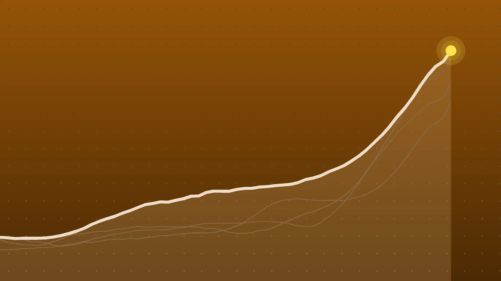

BusinessExplainer
Oil Prices: Brent Tops $116 on Fears the Iran War Will Restart
A report of new U.S. and Israeli strike plans, Houthi attacks on Saudi Arabia and a nervous weekend pushed crude to its highest level since the spring. Pump prices usually follow with a lag.

Quick take
- Brent crude for December settled at $116.72 a barrel on Oct. 23, up 3.1% on the day and more than 6% on the week, Bloomberg reported.
- U.S. benchmark West Texas Intermediate settled at $103.27, up 3.8%.
- The New York Times reported that the U.S. and Israel have drawn up plans for new strikes on Iran after the Nov. 3 midterm elections.
- The AAA national average for regular gasoline was $4.27 on Oct. 22, down 6 cents in a week, before the latest jump in crude.
Why it's trending Brent crude rose above $116 a barrel on Friday, Oct. 23, after a report that the U.S. and Israel have plans for renewed strikes on Iran after the midterm elections.
What happened
Oil prices climbed sharply on Friday, Oct. 23. Brent crude, the global benchmark, settled at $116.72 a barrel for December delivery, up 3.1% on the day, and gained more than 6% over the week, Bloomberg reported. West Texas Intermediate, the U.S. benchmark, settled at $103.27, up 3.8%. Bloomberg said Brent reached its highest level since April.
The trigger was a New York Times report that the U.S. and Israel have drawn up plans to strike Iran again once the American midterm elections in early November are over. Traders were also reacting to attacks by Iran-backed Houthi militants on Saudi Arabia, including the Red Sea port of Yanbu, and to Saudi Aramco evacuating its Dhahran headquarters on Thursday, according to Bloomberg and Trading Economics.
Why oil prices jumped now
Three things stacked up at once.
- War risk. The U.S.-Iran war is nearing its ninth month, Bloomberg noted. President Trump said the U.S. isn’t in talks with Iran and that something would happen “fairly soon,” Trading Economics reported. The State Department has ordered nonessential staff out of Saudi Arabia, a story covered in our explainer on the Dammam airport attack.
- Supply. Crude exports through the Strait of Hormuz have recovered to near prewar levels, but shipments of refined products such as diesel from the Gulf remain tight, Bloomberg said. Ukrainian attacks on Russian refineries add to the squeeze.
- Market mechanics. Options dealers hedging their positions amplified the rally, and traders didn’t want to bet on lower prices going into a weekend when markets are closed. “Weekend escalation fears are adding fuel,” Rebecca Babin of CIBC Private Wealth Group told Bloomberg.
For background on the shipping lane at the center of all this, see our explainer on the Strait of Hormuz. Before the war, about a fifth of the world’s crude and gas exports passed through it, The Telegraph reported.
The numbers
| Measure | Latest figure | Source |
|---|---|---|
| Brent settle, Oct. 23 | $116.72, up 3.1% | Bloomberg |
| WTI settle, Oct. 23 | $103.27, up 3.8% | Bloomberg |
| Brent, weekly change | more than 6% | Bloomberg |
| Brent, change in 2026 | more than 85% | Bloomberg, The Telegraph |
| European wholesale diesel | record $1,485 a metric ton | The Telegraph |
| U.S. regular gasoline, Oct. 22 | $4.27 a gallon | AAA |
| U.S. diesel, mid-October | $6.28 a gallon, vs. $3.65 a year earlier | OilPrice.com |
A rough way to read these: an 85% gain in a year means a barrel that cost about $63 in January would cost around $117 now. And U.S. diesel at $6.28 is about 72% higher than a year earlier, which matters for anything that moves by truck.
What it means for gas prices
Pump prices react to crude with a delay. In New Zealand, for example, petrol prices usually catch up with world crude a week or two later, RNZ reported. In the U.S., the AAA national average had been easing, falling 6 cents in a week to $4.27 on Oct. 22 as stations switched to cheaper winter-blend gasoline, AAA said. That was before this week’s jump in crude, so the recent dip may not last.
Prices were already at records for the season. AAA said September’s average of $4.33 was 50 cents above the previous September record. Fuel costs fed into inflation too, as our September CPI explainer showed.
Washington has been trying to add supply. The administration used the Defense Production Act to help expand a refinery in Tyler, Texas, OilPrice.com reported, and the Energy Department will lend up to 400,000 barrels from the Strategic Petroleum Reserve to a Phillips 66 refinery in Louisiana, according to The Telegraph.
Who says what
Analysts quoted by Bloomberg and The Telegraph leaned toward higher prices in the short run. TD Securities’ Ryan McKay said he expects crude to stay “skewed to the upside” in the near term. PVM’s Tamas Varga said peace in the Gulf looks more elusive than before, and Citigroup’s Francesco Martoccia warned against assuming Gulf export flows are back to normal.
U.N. Ambassador Mike Waltz told the Financial Times that the U.S. is preparing for a long conflict and could be in a stalemate a year from now, Bloomberg reported.
What happens next
- The weekend. Any new strike or attack before trading resumes could move prices again.
- The midterms on Nov. 3. The reported strike plans are tied to the period after the election, so the run-up may keep a risk premium in crude.
- Pump prices. Watch AAA’s weekly update. If crude holds above $100, the recent slide in gasoline prices could stall.
- The U.K. Budget on Oct. 28. British fuel campaigners are pressing for a cut in fuel duty, The Telegraph reported.
Quick answers
Why are oil prices going up today?
Brent rose above $116 on Oct. 23 after a New York Times report of U.S. and Israeli plans for new strikes on Iran after the midterms, plus Houthi attacks on Saudi oil sites.
What is the difference between Brent and WTI?
Brent is the global benchmark, based on North Sea crude. WTI is the U.S. benchmark, priced at Cushing, Oklahoma. On Oct. 23, Brent settled about $13 a barrel higher than WTI.
Will gas prices go up?
Not instantly. Retail fuel usually trails crude by a week or two. The U.S. average was $4.27 on Oct. 22, and AAA’s next weekly update will show whether this week’s jump is reaching the pump.
Sources
- Bloomberg via Rigzone Brent Tops $116 as Middle East Risks GrowOct. 23, 2026
- The Telegraph via AOL Oil hits five-month high amid fears of fresh strikes on IranOct. 23, 2026
- Trading Economics Brent crude oilOct. 23, 2026
- RNZ via Otago Daily Times Oil prices surge on reports US considering more Iran strikesOct. 22, 2026
- AAA National Average Falls 6 Cents, But Crude Oil Nears $100/BarrelOct. 22, 2026
- OilPrice.com White House Turns to Korean War-Era Law as Diesel Prices Stay Above $6Oct. 14, 2026
- TheStreet Stock Market Today (Oct. 23, 2026): Dow tumbles following tech sell-offOct. 23, 2026
Keep reading
Stock Market Today: Nasdaq Drops 2.6% as Meta Revives AI Doubts
The Nasdaq fell 2.6% on Oct. 22, its worst day since early June, as Meta’s AI spending, chip stocks and $111 oil hit markets. What moved and what’s next.

September CPI: Inflation Jumps to 3.7% as Gas Prices Soar
U.S. inflation rose to 3.7% in September as gasoline jumped 34% from a year ago. What drove it, what it means for paychecks, and the Fed’s next move.

SpaceX Earnings: Q3 Revenue Hits $14.6B as Tesla Merger Talk Grows
SpaceX earnings beat forecasts with $14.6 billion in Q3 revenue, and Musk says Tesla and SpaceX committees are studying a merger. Here’s what it means.